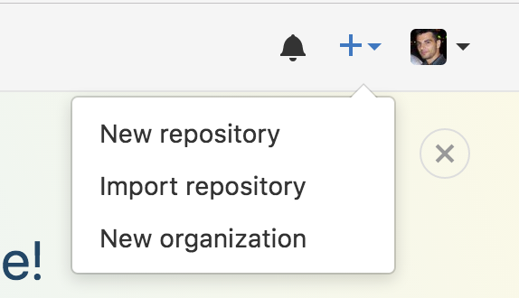

Create a repository (project) on github

Make a Project
(Directory)
Initialize GIT
run: git init
Add files to GIT
run: git add .
Commit your files
run: git commit -m "first commit"
Add a remote repository
run: git remote add origin https://github.com/USER_NAME/PROJECT_NAME
to list remote repositories, run: git remote -v
Commit your files
run: git push origin master